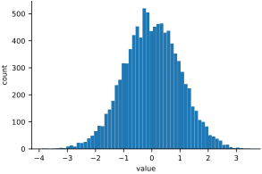

Everything a neural network sees, it sees as a list of numbers. A photograph is a grid of brightness values, a sound is a sequence of air-pressure readings, and a sentence, by the time a network reads it, has been turned into rows of numbers too. The network itself is also just numbers: its “knowledge” is a large collection of weights. Learning to think about deep learning therefore begins with learning to think in arrays: lists, grids, and stacks of numbers that we can add, multiply and reshape all at once.
This chapter introduces NumPy, the Python library that made array programming ordinary. It is short on purpose. We will meet only the handful of operations that the rest of the book leans on, and almost every one of them will reappear, under a different name, inside PyTorch.
A first array
import numpy as np
np.set_printoptions(precision=3, suppress=True) # tidier printing
a = np.array([1, 2, 3, 4, 5])
print(a)
print(a + 5)
print(a * 2)
print(a.shape, a.dtype)[1 2 3 4 5] [ 6 7 8 9 10] [ 2 4 6 8 10] (5,) int64
(The set_printoptions line only tidies the printing, showing three decimal places and no scientific notation. Every chapter starts with something like it, so that the numbers you see match the ones printed here.)
Notice what did not happen: there is no loop. a + 5 adds five to every element, and a * 2 doubles every element. Operations on arrays act on all of their elements at once. This style is called vectorized code, and it is not just a convenience. The loop still happens, but it happens inside NumPy’s compiled code (and, later, on a graphics card), where it runs hundreds of times faster than a Python loop would.
Every array has a shape and a dtype. The shape (5,) says there is one axis with five elements; the dtype says they are 64-bit integers. When something goes wrong in deep learning code, the first question to ask is almost always “what shape is this?”
Two dimensions
A grid of numbers is a two-dimensional array, which a mathematician would call a matrix.
m = np.array([[1, 2, 3],
[4, 5, 6]])
print(m)
print(m.shape)
print(m.T)[[1 2 3] [4 5 6]] (2, 3) [[1 4] [2 5] [3 6]]
The shape (2, 3) means two rows and three columns, always in that order. m.T is the transpose: rows become columns. Arithmetic works element by element exactly as before, and NumPy provides the usual mathematical functions:
a = np.array([1.0, 2.0, 3.0])
b = np.array([4.0, 5.0, 6.0])
print(a + b)
print(a * b)
print(np.sqrt(b))
print(np.mean(a), np.max(b))[5. 7. 9.] [ 4. 10. 18.] [2. 2.236 2.449] 2.0 6.0
Reshaping
The same twelve numbers can be arranged as a row, as a grid, or as a block. Reshaping never changes the numbers or their order; it only changes how we index them.
x = np.arange(12)
print(x)
print(x.reshape(3, 4))
print(x.reshape(2, 2, 3).shape)
print(x.reshape(-1, 6).shape) # -1 means "work it out for me"[ 0 1 2 3 4 5 6 7 8 9 10 11] [[ 0 1 2 3] [ 4 5 6 7] [ 8 9 10 11]] (2, 2, 3) (2, 6)
The in the last line asks NumPy to work out that dimension from the others: twelve numbers in rows of six means two rows. This trick will be everywhere in the chapters ahead, because a image and a list of 784 numbers are the same data, reshaped.
Indexing and slicing
Square brackets pick out parts of an array. For a two-dimensional array the first index is the row and the second is the column. A colon on its own means “everything along this axis,” and a:b means “from a up to, but not including, b.”
m = np.arange(12).reshape(3, 4)
print(m)
print(m[0, 0], m[2, 3]) # single elements: [row, column]
print(m[1]) # a whole row
print(m[:, 2]) # a whole column
print(m[0:2, 1:3]) # rows 0-1, columns 1-2[[ 0 1 2 3] [ 4 5 6 7] [ 8 9 10 11]] 0 11 [4 5 6 7] [ 2 6 10] [[1 2] [5 6]]
The last line, which takes a rectangular block, is exactly how we will crop images in the next chapter.
Picking with conditions and lists
Two more ways of indexing will save us a great deal of work later. The first uses a condition. Comparing an array with a number gives an array of True and False, one per element, called a mask. Indexing with a mask keeps exactly the elements marked True. The condition can even come from a different array of the same length, which is how we will pick out, say, all the images of the digit 7 from a dataset using its list of labels.
scores = np.array([3, 8, 1, 9, 4])
print(scores > 4) # a True/False answer for every element
print(scores[scores > 4]) # keep only the elements marked True
labels = np.array([0, 1, 0, 1, 1])
print(scores[labels == 1]) # select using a condition on another array
both = (scores > 2) & (scores < 9) # & means "and", | means "or"
print(both, both.mean()) # the mean of True/False is a fraction[False True False True False] [8 9] [8 9 4] [ True True False False True] 0.6
Two conditions combine with & (“and”) and | (“or”); the parentheses around each condition are needed. And because True counts as 1 and False as 0, the mean of a True/False array is the fraction of elements that are True: here three of five, 0.6. We will measure accuracy exactly this way, as the mean of guesses == labels.
The second uses a list of positions. Indexing with a list picks those elements in that order, repeats allowed. With one list per axis, the lists are paired up: the first row index with the first column index, and so on.
print(scores[[0, 3, 3]]) # pick elements by a list of positions
m = np.arange(12).reshape(3, 4)
print(m[[0, 1, 2], [3, 0, 1]]) # elements (0,3), (1,0) and (2,1)[3 9 9] [3 4 9]
Pairing like this picks one element from each row, a trick we will use in Chapter 11 to look up, for every image, the score of its correct answer.
The dot product
Here is the single most important operation in this book. Take two lists of numbers of the same length, multiply them pair by pair, and add up the results. That is the dot product.
x = np.array([1.0, 2.0, 3.0]) # an input
w = np.array([0.5, -1.0, 2.0]) # a weight for each input
print(np.sum(x * w))
print(x @ w)4.5 4.5
Read x as an input and w as a set of weights, one per input. The dot product is a weighted vote: inputs with large positive weights push the total up, inputs with negative weights pull it down, and inputs with weights near zero are ignored. An artificial neuron, stripped to its essentials, computes exactly this sum. NumPy writes it with the @ operator.
Matrix multiplication
If one weighted sum is a neuron, then several weighted sums computed from the same input are a layer of neurons. Stack the weight vectors side by side as the columns of a matrix, and @ computes all the dot products at once:
x = np.array([1.0, 2.0, 3.0]) # 3 inputs
W = np.array([[0.5, 1.0],
[-1.0, 0.0],
[2.0, 1.0]]) # 3 inputs -> 2 outputs
print(W.shape)
print(x @ W)(3, 2) [4.5 4. ]
Three inputs went in and two outputs came out, because the weight matrix has shape (3, 2). Now stack several inputs as the rows of a matrix, one example per row, and a single multiplication processes all of them:
X = np.array([[1.0, 2.0, 3.0],
[0.0, 1.0, 0.0],
[2.0, 2.0, 2.0],
[1.0, 0.0, -1.0]]) # 4 examples, 3 numbers each
print(X.shape, W.shape)
print(X @ W)
print((X @ W).shape)(4, 3) (3, 2) [[ 4.5 4. ] [-1. 0. ] [ 3. 4. ] [-1.5 0. ]] (4, 2)
This is matrix multiplication, and its shape rule is worth memorizing: The inner sizes must agree, since each row of the left matrix is dotted with each column of the right, and they disappear from the result. Four examples of three numbers each, times a weight matrix, give four examples of two numbers each. When the inner sizes do not agree, NumPy refuses:
try:
W @ X
except ValueError as err:
print(err)matmul: Input operand 1 has a mismatch in its core dimension 0, with gufunc signature (n?,k),(k,m?)->(n?,m?) (size 4 is different from 2)
The message is cryptic, so let’s decode it once. “Operand 1” is the second matrix (NumPy counts from zero), X with shape (4, 3). Its “core dimension 0” is its first size, 4, and that should have matched the last size of the first matrix, which is 2. You will see this error many times. It is a friend: it means the shapes in your head and the shapes in the computer have drifted apart, and it tells you which sizes disagree.
Summing along an axis
Many operations can collapse an array along one axis. The axis argument names the axis that disappears.
m = np.array([[1, 2, 3],
[4, 5, 6]])
print(m.sum())
print(m.sum(axis=0)) # collapse the rows: one total per column
print(m.sum(axis=1)) # collapse the columns: one total per row21 [5 7 9] [ 6 15]
Finding the winner
np.argmax returns the position of the largest value rather than the value itself. If the four numbers in scores were a network’s confidence in four possible answers, argmax would be its answer. With axis=1 it picks a winner for every row: one answer per example.
scores = np.array([0.1, 2.3, -1.0, 0.7])
print(np.max(scores), np.argmax(scores))
S = np.array([[0.1, 2.3, -1.0, 0.7],
[3.0, 0.2, 0.5, 0.1],
[0.0, 0.1, 0.2, 0.9]])
print(np.argmax(S, axis=1))2.3 1 [1 0 3]
Put @ and argmax together and you have the skeleton of a classifier: multiply the inputs by a weight matrix to get a score for each class, then pick the class with the highest score. The whole of Part III is about finding good weights for that matrix.
Broadcasting
When two arrays have different shapes, NumPy will often stretch the smaller one to fit, a rule called broadcasting. A single number is stretched to the whole array; a row is repeated down every row.
m = np.array([[1, 2, 3],
[4, 5, 6]])
print(m * 10)
print(m * np.array([1, 10, 100]))
print(m - m.mean(axis=0))[[10 20 30] [40 50 60]] [[ 1 20 300] [ 4 50 600]] [[-1.5 -1.5 -1.5] [ 1.5 1.5 1.5]]
The last line subtracts each column’s mean from that column, a one-line version of the kind of data normalization we will do repeatedly.
The precise rule is this. NumPy compares the two shapes starting from the right. Two sizes are compatible if they are equal or if one of them is 1, and a size of 1 is stretched to match the other. Missing sizes on the left count as 1. So shape (2, 3) works with (3,), because the 3s line up on the right, but not with (2,), because 3 and 2 do not:
m = np.array([[1.0, 2.0, 3.0],
[4.0, 5.0, 6.0]])
totals = m.sum(axis=1)
print(totals.shape)
try:
m / totals
except ValueError as err:
print(err)
totals = m.sum(axis=1, keepdims=True)
print(totals.shape)
print(m / totals) # each row now adds up to 1(2,) operands could not be broadcast together with shapes (2,3) (2,) (2, 1) [[0.167 0.333 0.5 ] [0.267 0.333 0.4 ]]
Summing each row gives one total per row, shape (2,), which does not line up with the rows of m. The fix is keepdims=True, which keeps the summed axis as a size-1 axis, shape (2, 1), so that each total stretches across its own row. Dividing each row by its total, as here, is exactly what we will do to turn scores into probabilities in Chapter 11.
Random numbers
Neural networks begin their lives as random numbers, so we need a way to make them. NumPy’s random number generator can produce uniform values, integers, and samples from the bell-shaped normal distribution. Passing a seed makes the “random” numbers repeatable, which is why your output will match the output printed here.
rng = np.random.default_rng(seed=0)
print(rng.random(5)) # uniform between 0 and 1
print(rng.integers(1, 7, size=10)) # dice: 1 to 6 (7 is excluded)
print(rng.normal(0, 1, size=5)) # bell curve: mean 0, spread 1[0.637 0.27 0.041 0.017 0.813] [4 6 4 4 6 5 4 4 4 6] [-0.623 0.041 -2.325 -0.219 -1.246]
A histogram shows the familiar bell shape of ten thousand normal samples (Figure 6.1).
import matplotlib.pyplot as plt
samples = rng.normal(0, 1, size=10_000)
plt.hist(samples, bins=60)
plt.xlabel('value')
plt.ylabel('count')
plt.show()
That is all the NumPy we need to begin. In the next chapter we will use these same operations, including indexing, slicing, reshaping and arithmetic, on pictures.